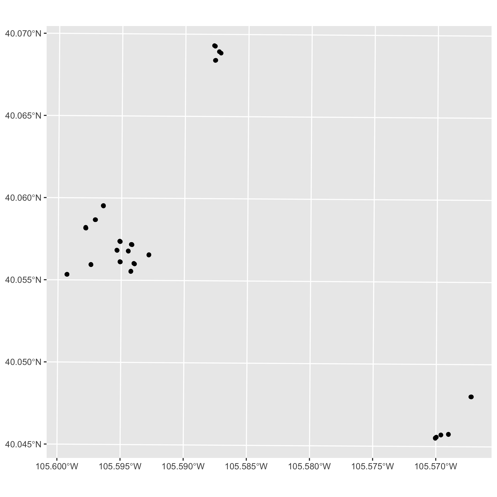
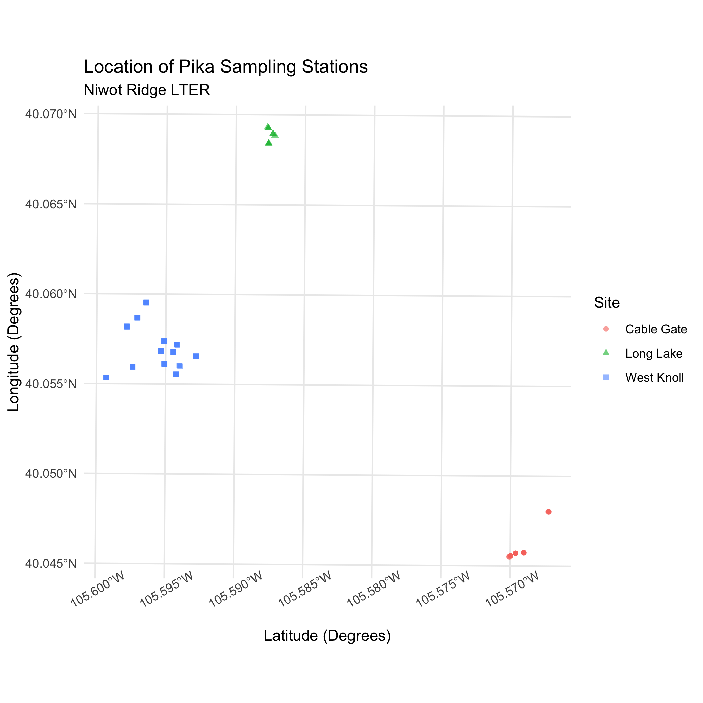
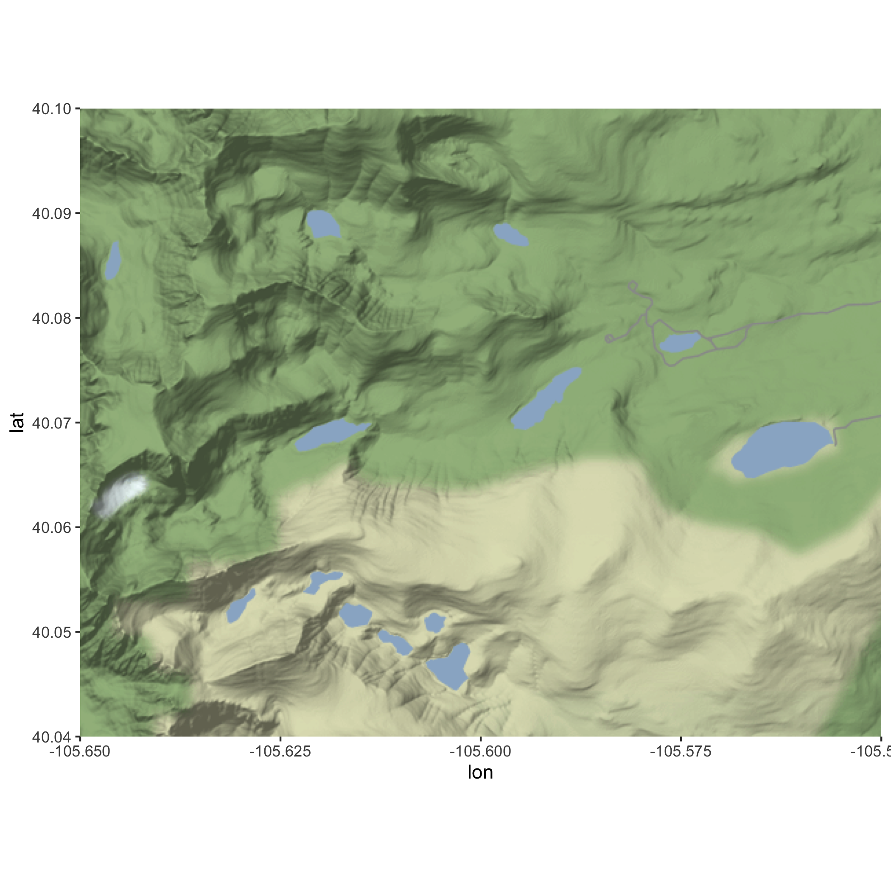
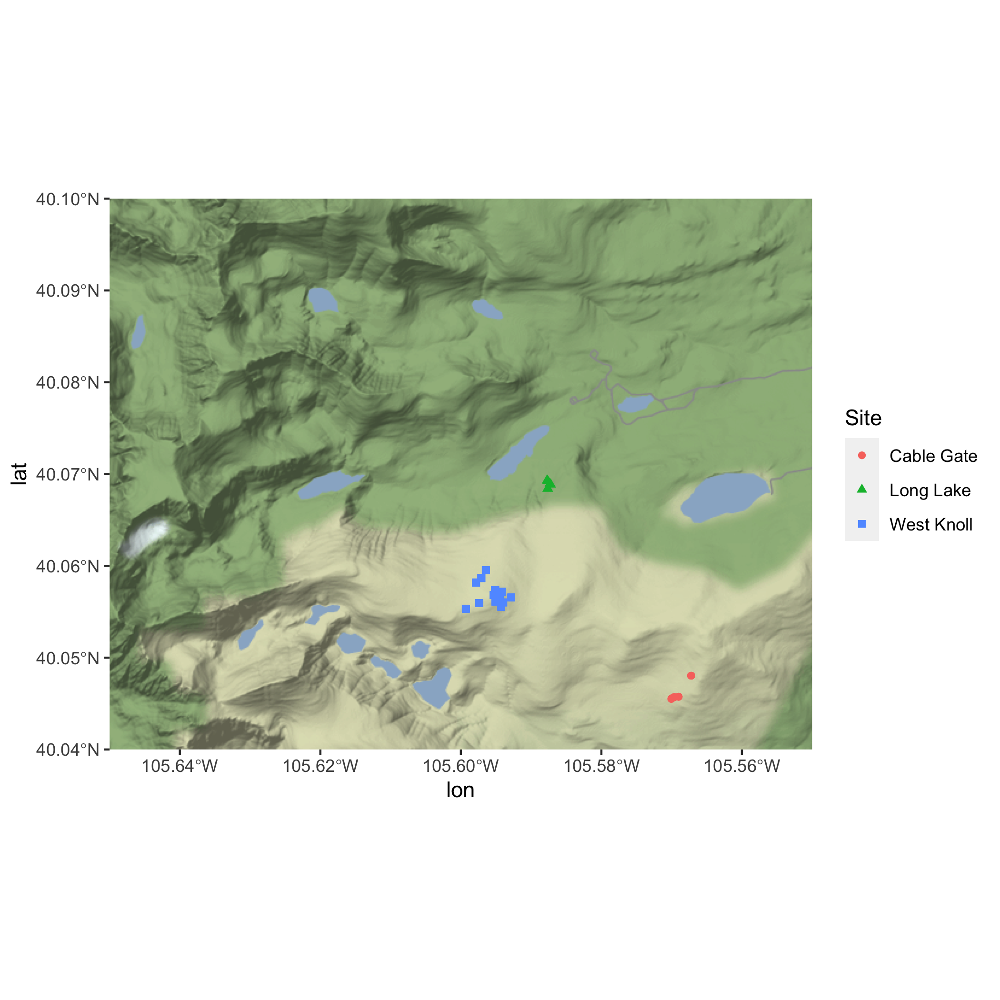
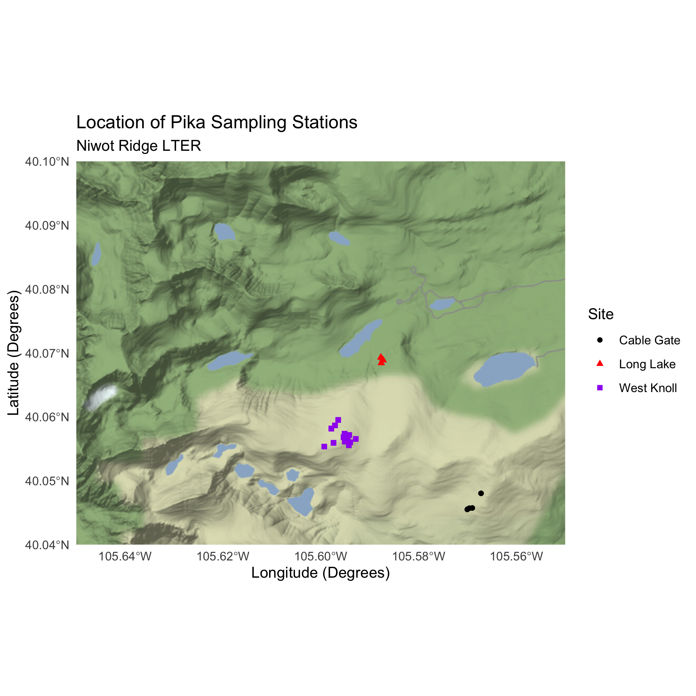

Learning Objectives
- Practice cleaning and wrangling spatial data
- Practice visualizing spatial data and making maps
- Practice adding a basemap to a map
These exercises are adapted from the lterdatasampler package.
16.1 About the data
These exercises will be using pika stress metrics and Colorado Rockies elevation data collected by researchers at the Niwot Ridge LTER research site. Data will be accessed from the EDI Portal Physiological stress of American pika (Ochotona princeps) and associated habitat characteristics for Niwot Ridge, 2018 - 2019.
16.2 Exercise:
Make sure you’re in the right project (
training_{USERNAME}) and use theGitworkflow byPulling to check for any changes in the remote repository (aka repository on GitHub).-
Create a new R Markdown file.
- Title it “R Practice: Spatial Data and Making Maps”.
- Save the file and name it “r-practice-spatial-data-maps”.
Load the following libraries at the top of your R Markdown file.
- Obtain pika and elevation data from the EDI Data Portal Physiological stress of American pika (Ochotona princeps) and associated habitat characteristics for Niwot Ridge, 2018 - 2019. Download the following files:
-
pika_fecal_glut.aw.data.csv(Fecal glucocorticoid concentration) -
pika_fecal_glut_habitat.aw.data.csv(Habitat characteristics)
-
Note: It’s up to you on how you want to download and load the data! You can either use the download links (obtain by right-clicking the “Download” button and select “Copy Link Address” for each data entity) or manually download the data and then upload the files to RStudio server.
Organize your R Markdown in a meaningful way. This is up to you! Consider the different ways we’ve organized previous files using: headers, bold text, naming code chunks, comments in code chunks. What is most important is organizing and documenting the file so that your future self (or if you share this file with others!) understands it as well as your current self does right now.
-
Use the
Gitworkflow. After you’ve set up your project and uploaded your data go through the workflow:Stage > Commit > Pull > Push-
Note: You also want to
Pullwhen you first open a project.
-
Note: You also want to
16.3 Exercise: Practice Cleaning & Wrangling data
16.3.1 Read in the data
Read in the data and store the data frame pika_fecal_glut.aw.data.csv (Fecal glucocorticoid concentration) to an object called pika, and store the second data frame pika_fecal_glut_habitat.aw.data.csv (Habitat characteristics) to an object called elevation
Answer
# read in data using download links
pika <- read_csv("https://portal.edirepository.org/nis/dataviewer?packageid=knb-lter-nwt.268.1&entityid=43270add3532c7f3716404576cfb3f2c")
elevation <- read_csv("https://portal.edirepository.org/nis/dataviewer?packageid=knb-lter-nwt.268.1&entityid=6a10b35988119d0462837f9bfa31dd2f")
# read in data from the data directory after manually downloading data
pika <- read_csv("data/pika_fecal_glut.aw.data.csv")
elevation <- read_csv("data/pika_fecal_glut_habitat.aw.data.csv")16.3.2 Get familiar with the data
Always, always look at your data. Use functions to explore the data you just read in. Think about which functions we’ve been using to see the data, access information about columns, unique observations, data types and structure of the data frame.
Note: We will only use the columns Station and Elev_M from the elevation table, so spend more time explore the pika data. Also, some quick metadata: Concentration_pg_g in the pika table is the stress measurement and was taken from fecal pellets.
Answer
# view data in a spreadsheet-style viewer
View(pika)
# returns dimensions of the dataframe by number of rows and number of cols
dim(pika)
# returns the top six rows of the dataframe
head(pika)
# returns all the columns and some info about the cols
glimpse(pika)
# similar to glimpse but returns some summary statistics about the cols
summary(pika)
# returns column names
names(pika)
# returns unique values in a column. In this case we can see all the different bird species IDs
unique(pika$Site)
16.3.3 Clean & Wrangle pika and elevation tables
We are going to be using some of the cleaning steps that the lterdatasampler developers used. Some of their cleaning steps may be beyond what we’ve covered in this course, but it’s overall straightforward and we’ll be guiding you through every step.
Let’s start with the pika data.
From the pika data we only want the columns:
DateStationUTM_EastingUTM_NorthingConcentration_pg_gSiteSex
Write code to subset the data so it only contains those columns and save it to an object called pika_clean.
Next, we want to convert data types.
The variables Station, Site, and Sex all have a class of character (you can find out what data type a variable is by using the function class() i.e. class(pika_clean$Station)). We want to convert these three variables so that they have a class of factor. Do this within a mutate() and use the function as.factor(). Don’t forget you can always check the help page using ?.
In the rest of these cleaning steps, we’ll be overriding pika_clean, meaning you don’t need to create a new object.
Check that the conversation worked using class().
Next, we want to spell out the abbreviations in Site. With unique(), we find that Site has three unique site IDs: CG, WK, LL. And from the metadata, we know that:
- CG = Cable Gate
- WK = West Knoll
- LL = Long Lake
Write code to spell out the abbreviations within a mutate() using the function recode(). recode() is an extremely useful function that allows you to replace values within a vector. View the help page or use Google.
Check that your code worked using unique().
We’re almost done! Take a look at the pika_clean data using View(). The table might be better organized if we had the variables Station and Site next to each other. We can change that using the function relocate(). relocate() is another useful function that allows us to change the column order using the arguments .before and .after. If needed, view the help page or use Google.
Let’s change the order of the columns so that Site is before Station, and Sex is after UTM-Northing. This does not need to be within a mutate() because we are not changing any of the values within a column / variable.
Check that your code worked by viewing pika_clean using View().
We’re done! These are the all the cleaning and wrangling steps we are going to do for pika. We completed these steps one by one in their own code chunks, but know that you could have piped into each step in a single code chunk. See the code chunk below:
Piped Sequence
# cleaning and wrangling using a piped sequence
pika_clean <- pika %>%
# Question 3
select(-Notes,
-Vial,
-Plate,
-Biweek) %>%
mutate(
# Question 4
Station = as.factor(Station),
Site = as.factor(Site),
Sex = as.factor(Sex),
# Question 5 (Note: within the same mutate)
Site = recode(
Site,
"CG" = "Cable Gate",
"WK" = "West Knoll",
"LL" = "Long Lake"
)
) %>%
# Question 6
relocate(Site, .before = Station) %>%
relocate(Sex, .after = UTM_Northing)Now let’s clean and wrangle elevation.
From the elevation data we only want the columns:
StationElev_M
Write code to subset the data so it only contains those columns and save it to an object called elevation_clean.
Lastly, we want to convert data types.
The variable Station has a class of character (you can find out what data type a variable is by using the function class() i.e. class(elevation_clean$Station)). We want to convert this variable so that it has a class of factor. Do this within a mutate() and use the function as.factor(). Don’t forget you can always check the help page using ?.
In the rest of these cleaning steps, we’ll be overriding elevation_clean, meaning you don’t need to create a new object.
Check that the conversation worked using class().
If we combined these cleaning and wrangling steps in a piped sequence it would look like this:
16.3.4 Join pika_clean and elevation_clean
Finally, the last wrangling step we want to do is merge these two cleaned and subsetted tables.
Since we want all the information from our newly subsetted tables, use full_join() to merge the tables together. Explicitly include the variable you’re joining by. Look at the output and check that it’s what you expected.
16.4 Exercise: Spatial Exploration and Making Maps
Let’s use the data from the pikas table to practice some of the spatial functions we learned about from the sf package. We’ll also practice making maps using ggplot, as well as adding basemaps using ggmap, and bonus content includes making an interactive map using leaflet and publishing to GitHub Pages.
16.4.1 Converting to Simple Features
If we run class(pikas), we’ll see that pikas has a class of table or data frame. However, if we want to create a map (or in the future run any spatial analysis), we need pikas to be a simple features (sf) object.
Using the coordinates in the table UTM_Easting and UTM_Northing to convert pikas into an sf object. To do this, use the sf function st_as_sf() and save it to an object called pikas_sf.
What new column do you expect to appear? What happened to the UTM_Easting and UTM_Northing columns?
Check the class of pikas_sf to make sure it’s an sf object.
16.4.2 Setting a Coordinate Reference System (CRS)
Run st_crs(pikas_sf) in the Console. The output we get is Coordinate Reference System: NA. So while we now have a geometry column with spatial information, we still don’t have a CRS associated with our points. We need a CRS to make sure our data is represented accurately in 2D, as well as on the Earth’s surface, what units are being used and more.
Set the CRS for the geometry column in pikas_sf using st_set_crs() and the EPSG code 26913.
Use st_crs() to check that you successfully set the CRS to 26913.
Note: This EPSG code is for North America, but knowing that the Niwot Ridge Research Station is located in north-central Colorado, you could search for this region on epsg.io and use a more local EPSG code. However, if you want to change the CRS after setting it here, you will need to use st_transform() because replacing the EPSG code in st_set_crs() will not reproject the data.
Answer
pikas_sf <- st_set_crs(pikas_sf, 26913)
16.4.3 Plotting Points using ggplot and geom_sf()
Create a basic map of the points using geom_sf() from ggplot. Don’t worry about making the map look nice, just plot to make sure the CRS you chose is accurate and isn’t causing any unintended distortion.
ggplot Map

Now, take some time to make your ggplot map look pretty. Consider the following:
- Color by a variable (i.e.
Site) - Adding labels (title, subtitle, axes, legend)
- Change the shape of the points using the
shapeargument inaes() - Add a theme (i.e.
theme_light()) - Customization of plot elements in
theme()
Answer
ggplot(data = pikas_sf) +
geom_sf(aes(color = Site, shape = Site), alpha = 0.6) +
theme_minimal() +
labs(
title = "Location of Pika Sampling Stations",
subtitle = "Niwot Ridge LTER",
x = "Latitude (Degrees)",
y = "Longitude (Degrees)"
) +
theme(axis.text.x = element_text(angle = 30)) # tilt x-axis text so that the labels don't overlapggplot Map

16.4.4 Add a basemap using ggmap
Before we start on the basemap, we need to reproject our data using st_transform(). If you recall, our data is currently using the projected CRS NAD83/UTM Zone 13N with the EPSG code 26913.
However, online basemaps often use the WGS84 Web Mercator coordinate system. This motivates us to reproject our data to the WGS84 CRS using st_transform() so that it’s more compatible with third-party maps and therefore allows us to do more with our spatial data.
Use st_transform() to reproject pikas_sf to WGS84 using the EPSG code 4326. Store it to a new object called pikas_sf_4326.
Answer
pikas_sf_4326 <- st_transform(pikas_sf, 4326)Create a bounding box for the Niwot Ridge LTER Research Station using left, right, top, and bottom coordinates. We found these coordinates for you using OpenStreetMap (see details steps below). Use the coordinates listed below to create a vector called nwt_bbox.
- left = -105.65
- bottom = 40.04
- right = -105.55
- top = 40.1
Answer
nwt_bbox <- c(left = -105.65, bottom = 40.04, right = -105.55, top = 40.1)Next, we can use ggmap() and get_stamenmap() to get our basemap and plot it.
get_stamenmap() creates a ggmap raster object and ggmap() will plot this ggmap raster object. We can specify the bbox argument as the nwt_bbox object we defined earlier. The zoom argument determines the scale of the map, and will take some trial and error to get right.
You can also specify the basemap using the arguement maptype. There are three different map types: “terrain”, “watercolor”, and “toner”. Explore these map types and choose one.
First, obtain the basemap using get_stamenmap(), specify the arguements, and save it to an object called nwt_basemap. Then use ggmap() to plot nwt_basemap.
Answer
nwt_basemap <- ggmap::get_stamenmap(nwt_bbox, zoom = 13,
maptype = "terrain")
ggmap(nwt_basemap)Basemap
Basemap and Pika Map
Now, take some time to make your map look pretty. Consider the following:
- Add a theme (i.e.
theme_light()) - Add labels (title, subtitle, axes, legend)
- Customize the colors of the sites using
scale_color_manual()
Answer
ggmap(nwt_basemap) +
geom_sf(pikas_sf_4326,
mapping = aes(color = Site, shape = Site),
inherit.aes = FALSE) +
theme_minimal() +
labs(
title = "Location of Pika Sampling Stations",
subtitle = "Niwot Ridge LTER",
x = "Longitude (Degrees)",
y = "Latitude (Degrees)"
) +
# choosing colors to make sure points are visible
scale_color_manual(values = c("black", "red", "purple")) Basemap and Pika Map

16.4.5 Bonus: Make an interactive map using leaflet
Use the functions leaflet(), addTiles(), and addCircles() to create an interactive map. Use pikas_sf_4326 as your data and Station as your label.
If you want to add more styling to your interactive map, review the leaflet sections in Intro to Data Viz, Using sf for Spatial Data & Intro to Map Making, or check out the leaflet cheatsheet.
Finally, publish your r-practice-spatial-data-maps.Rmd on GitHub Pages. Refer back to Publishing to the Web Using GitHub Pages for steps on how to publish using GitHub Pages.
Answer
leaflet() %>%
addTiles() %>%
addCircles(data = pikas_sf_4326, label = ~Station)